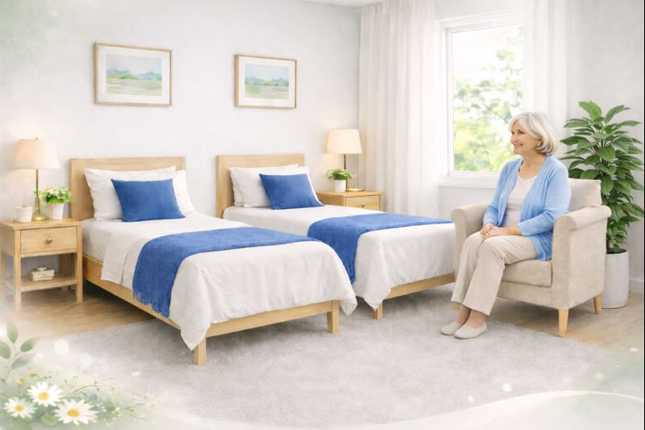
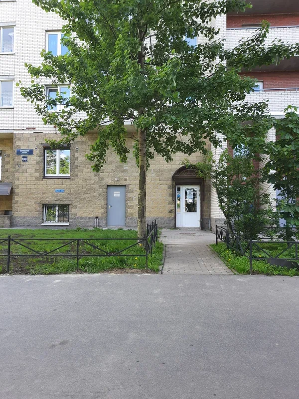
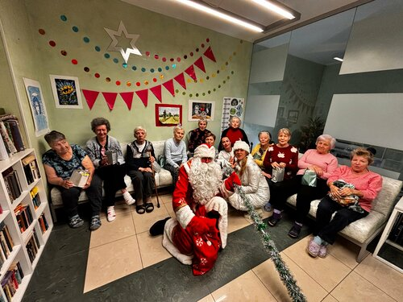
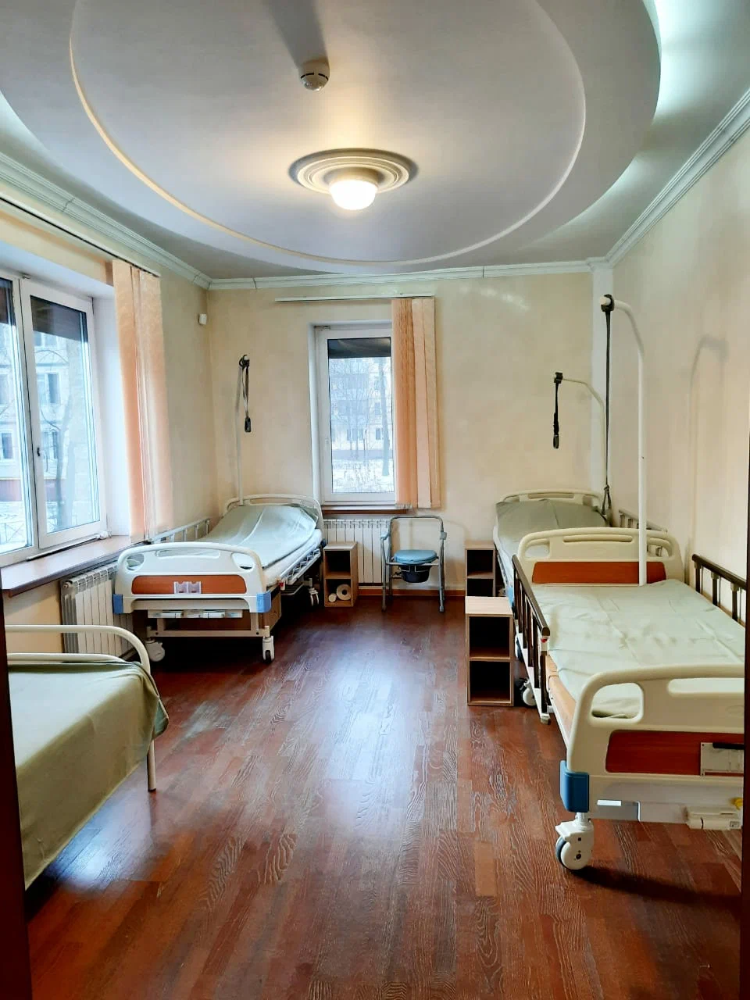
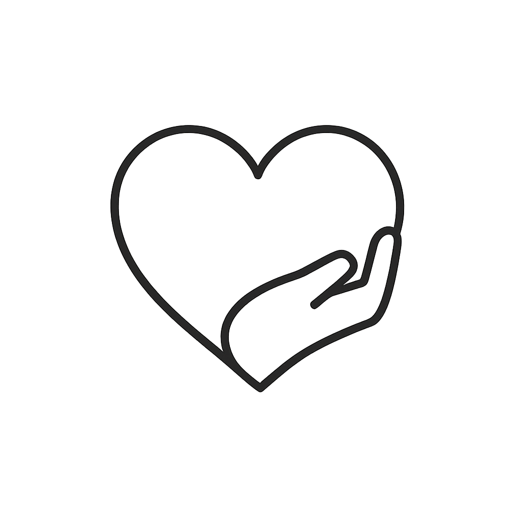
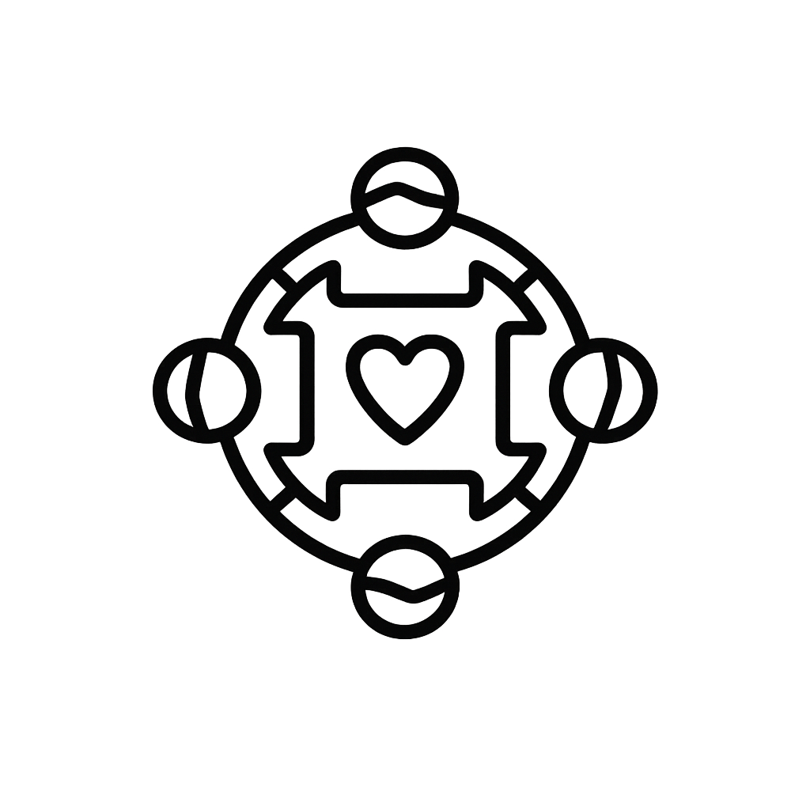
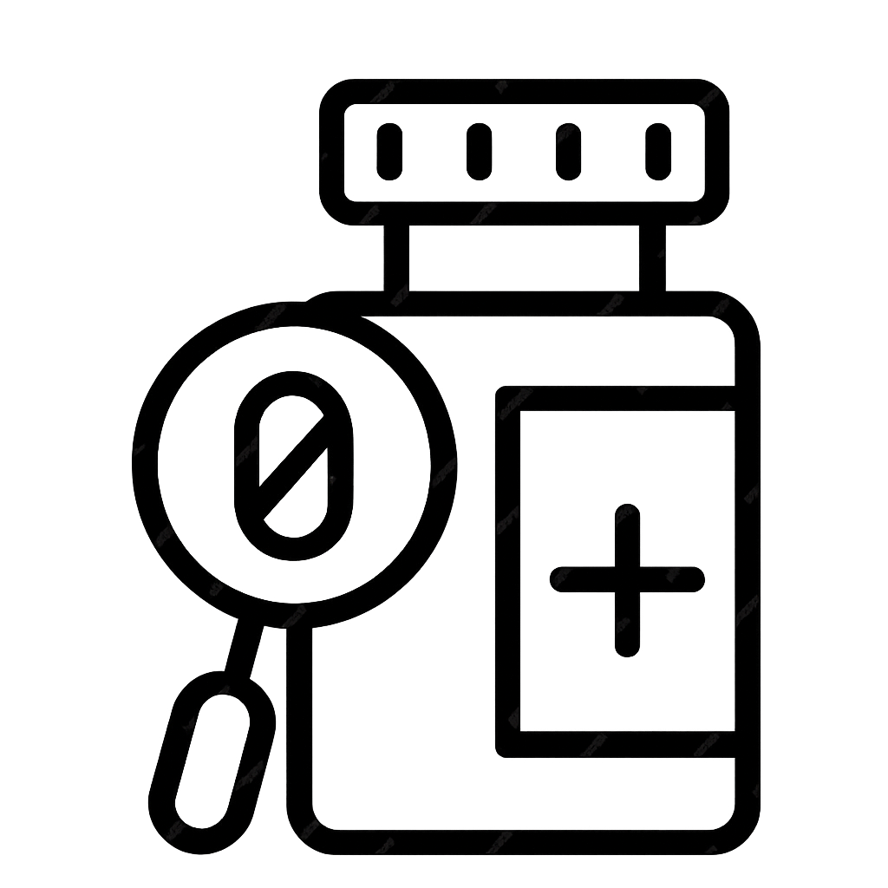
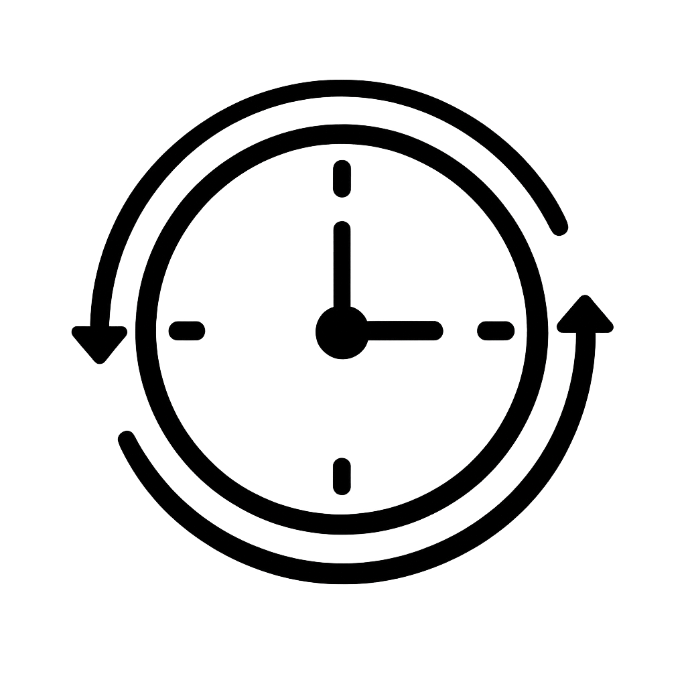
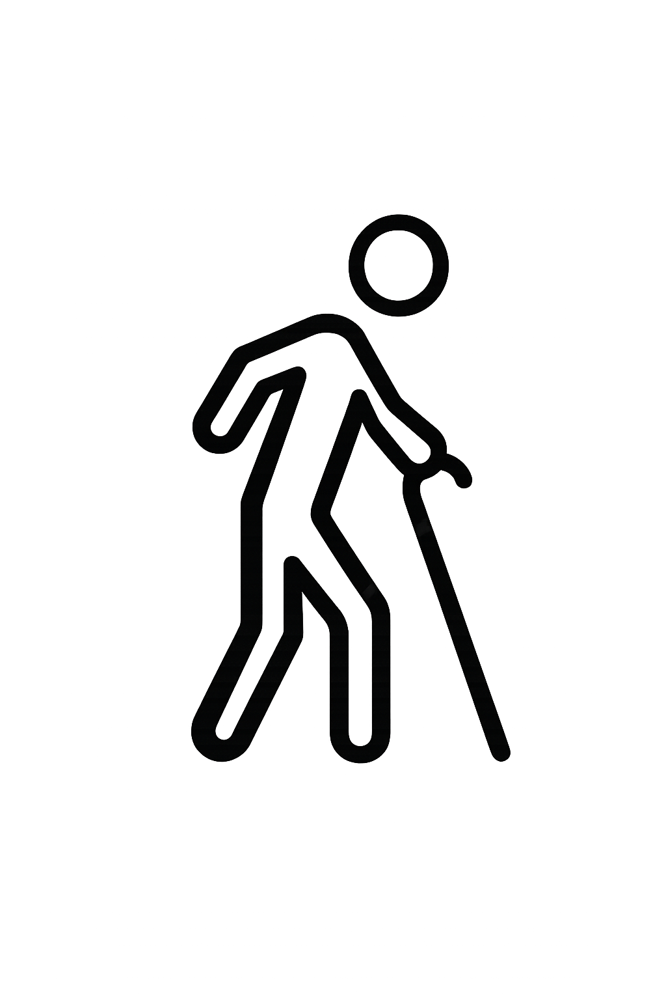
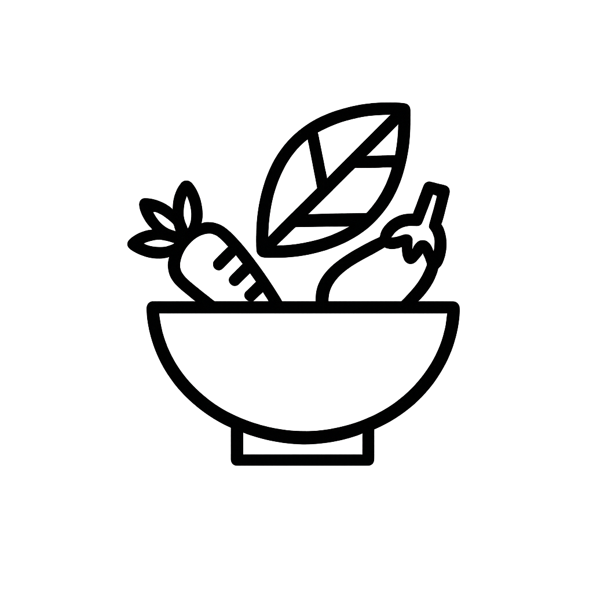

Комфортное проживание, внимательный персонал, домашняя атмосфера и качественный присмотр. Посещения в любой день по времени. Можно записаться на экскурсию.
Безопасно, уютно и по-домашнему. Внимательный персонал рядом каждый день, помощь в бытовых делах и спокойная атмосфера. Мы всегда на связи с родными и подбираем уход под потребности человека.



Пансионат с 2020 года находится в Московском районе Санкт-Петербурга, в 10 минутах (на машине) от НИИ Скорой помощи им.И.И.Джанилидзе. В пешей доступности от от ст.м. Звездная и ст.м. Купчино. Рассчитан на 20 койко-мест с отдельной столовой и рекреационной зоной, где располагается зона отдыха, небольшая библиотека, большой телевизор и настольные игры. Есть гостевой холл, где можно приятно пообщаться вдвоём на удобных креслах. Имеется вся необходимая мебель и оборудование. Вкусное сбалансированное питание, хлопковая постель и полотенца, мягкие подушки и одеяла, современные кровати. Всё сделано с любовью и глубоким уважением к мудрому поколению. Мы хотим быть Вам полезными. Видеть Ваши улыбки. Видеть, как Вы расцветаете от общения друг с другом. Всё по-домашнему! Всегда с удовольствием выслушаем и узнаем Ваш жизненный опыт! Никто не остается без внимания, когда желает общения, и конечно всегда есть возможность поговорить с умным человеком (с собой), если немного устал. Мы открыты для совместной творческой работы, занятий и духовного единства. Прогулки осуществляются в теплую погоду под присмотром родных.
Пансионат был открыт в 2026 году и расположен в Петродворцовом районе Санкт-Петербурга, в 15 минутах (на машине) от Николаевской Больницы. Практически на остановке «Ул.Дзержинского» (автобусы №357,354,329). В пешей доступности от станции «Старый Петергоф». Рассчитан на 25 койко-мест с отдельной столовой и рекреационной зоной, где располагается зона отдыха, небольшая библиотека, телевизор и настольные игры. Просторные светлые комнаты. Просторные санитарные комнаты, расположенные рядом. Есть гостевые холлы, где можно приятно пообщаться вдвоём на удобных креслах. Вся мебель и оборудование новое. Имеется огороженная территория, поэтому прогулки осуществляются в теплую погоду на террасе. Вкусное сбалансированное питание, хлопковая постель и полотенца, мягкие подушки и одеяла, современные кровати, свежий ремонт. Всё сделано с любовью и глубоким уважением к мудрому поколению. Мы хотим быть Вам полезными. Видеть Ваши улыбки. Видеть, как Вы расцветаете от общения друг с другом. Всё по-домашнему! Всегда с удовольствием выслушаем и узнаем Ваш жизненный опыт! Никто не остается без внимания, когда желает общения, и конечно всегда есть возможность поговорить с умным человеком (с собой), если немного устал. Мы открыты для совместной творческой работы, занятий и духовного единства.
Проживание в пансионатах и домах престарелых стало достаточно популярным. Это удобно, безопасно и комфортно. Не нужно искать сиделок, перебирать до бесконечности разных людей для ухода за самыми близкими на своей территории. Пожилые охотно соглашаются делить крышу с новыми друзьями под чутким присмотром квалифицированных специалистов. А их родные понимают, что это приемлемый вариант в случае появления такой необходимости. Ведь жизнь пожилых людей, которые страдают деменцией ведёт к однообразию и угасанию когнитивных функций, если болезнь вовремя не выявить и не начать соответствующую терапию. Для близких родственников эта болезнь становится целым испытанием, так как данный недуг протекает у каждого по-разному, не имеет твердых прогнозируемых течений и обратной реакции.
Пансионаты «Сиалия» имеют большой опыт и квалифицированный персонал для работы с пожилыми и лежачими постояльцами. Мы оказываем полноценную поддержку, профессиональную помощь в социально-бытовом уходе. Принимаем постояльцев с деменцией, пожилых людей, нуждающихся в постоперационном или постинсультном уходе. У нас в пансионате обеспечена инфраструктура для маломобильных постояльцев и тех, кому сложно передвигаться. На всей территории безпороговая система, широкие проходы, просторные комнаты.
Осуществляется контроль самочувствия. Сестры-хозяйки работают не только для ухода, создания уюта, но и для своевременного выявления изменения настроения или состояния здоровья. Поэтому среди нас есть сотрудники с медицинским образованием и соответствующей подготовкой. Медицинские услуги пансионат не оказывает, однако в случае необходимости на платной основе можно пригласить врача, специалиста за консультацией и помощью. Либо прикрепить полис ОМС к местной поликлинике и приглашать специалистов по полису. В пансионатах установлена современная система пожарной безопасности.
Мы работаем с пожилыми людьми и лежачими больными. Принимаем на время реабилитации после инсульта и перелома ш/б. А также занимаемся уходом для людей с деменцией любой стадии. О противопоказаниях и ограничениях можно проконсультироваться по телефону +7 (921) 939-0406






Мы позаботились о вас и для удобства размещаем основные документы здесь. Оформление договора осуществляется в день заселения, а список того, что нужно с собой брать в памятке.
Телефон: +7 (921) 939-04-06
Email: info@sialiya.spb.ru